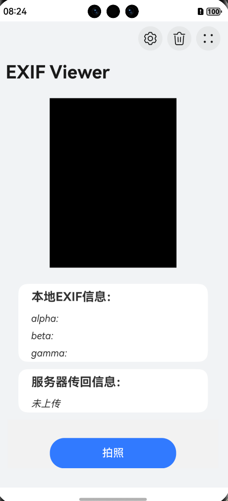

客户端设计说明
1. 总体概览
本客户端基于ArkTS（鸿蒙生态的应用开发语言）开发，主要功能流程是： - 采集设备方向传感器数据 - 拍照并选择图片 - 读取图片，写入EXIF信息（用户备注）
-
将图片编码为Base64上传到服务器
-
轮询服务器查询处理结果
-
根据处理结果（如旋转角度）在前端更新展示
架构上主要划分为：
-
传感器数据采集模块
-
图片处理模块
-
网络通信模块
-
UI模块
客户端流程图
flowchart TD
%% ========== 初始化流程 ==========
A[页面加载] --> B[注册传感器监听]
B --> C[创建环形缓冲]
C --> D[持续接收数据]
%% ========== 用户操作流 ==========
D --> E[用户点击拍照]
E --> F[调用系统相机]
F --> G{获取成功?}
G -- 否 --> H[显示错误]
G -- 是 --> I[显示预览图]
%% ========== 数据处理流 ==========
I --> J[获取时间戳]
J --> K{EXIF有效?}
K -- 是 --> L[精确匹配]
K -- 否 --> M[使用拍照时间]
L --> N[生成注释]
M --> N
%% ========== 文件处理流 ==========
N --> O[保存到沙箱]
O --> P[写入EXIF]
P --> Q[转换Base64]
%% ========== 网络通信流 ==========
Q --> R[上传服务器]
R --> S{上传成功?}
S -- 否 --> T[提示失败]
S -- 是 --> U[启动轮询]
%% ========== 轮询优化布局 ==========
subgraph 状态轮询
direction TB
U --> V[查询状态]
V --> W{结果状态}
W -- 处理中 --> X[等待10秒]
X --> V
W -- 完成 --> Y[显示结果]
W -- 错误 --> Z[提示错误]
end
%% ========== 终止节点 ==========
H --> AA[结束流程]
T --> AA
Y --> AA
Z --> AA
%% ========== 样式定义 ==========
classDef main fill:#e1f5fe,stroke:#039be5
class A,B,C,D,E,F,G,I,J,K,O,P,Q,R,S,U main
classDef poll fill:#f0f4c3,stroke:#827717
class 状态轮询 poll
2. 模块详细设计说明
2.1 传感器数据采集模块
主要功能： - 监听设备方向传感器（Orientation）
- 将传感器数据以固定频率采样并缓存，供后续图片处理使用
核心代码如下：
aboutToAppear() { //页面打开时订阅传感器
try {
sensor.on(sensor.SensorType.SENSOR_TYPE_ID_ORIENTATION, (data: sensor.OrientationResponse) => {
const timestamp = Date.now(); // 这是一个以毫秒为单位的时间戳
this.sensorBuffer.push({ timestamp, data });
if (this.sensorBuffer.length > this.BUFFER_SIZE) {
this.sensorBuffer.shift();
}
}, { interval: this.sensorInterval });
} catch (error) {
console.error('传感器订阅失败:', error);
}
}
aboutToDisappear() { //页面关闭时取消传感器订阅
try {
sensor.off(sensor.SensorType.SENSOR_TYPE_ID_ORIENTATION);
} catch (error) {
console.error('取消传感器订阅失败:', error);
}
}
数据通过@State sensorBuffer: SensorDataPoint[] = [];数组保存最近的100个数据点。
2.2 图片处理模块
主要功能： - 选取图片
-
写入EXIF信息
-
将图片转换成Base64编码
写入EXIF信息的关键代码如下：
async writeUserComment(filePath: string, comment: string) { //写入EXIF信息
const file = fs.openSync(filePath, fs.OpenMode.READ_WRITE);
let imageSource = image.createImageSource(file.fd);
await imageSource.modifyImageProperty(image.PropertyKey.USER_COMMENT, comment);
}
将图片转换成Base64编码的关键代码如下：
async JPG2Base64(filePath: string) { //图片转换成Base64编码
const file = fs.openSync(filePath, fs.OpenMode.READ_WRITE);
const imageSource = image.createImageSource(file.fd);
const imagePackerApi = image.createImagePacker();
const packOpts = { format: 'image/jpeg', quality: 100 };
const data = await imagePackerApi.packToData(imageSource, packOpts);
const base64Helper = new util.Base64Helper();
const base64Str = base64Helper.encodeToStringSync(new Uint8Array(data));
}
EXIF写入采用ImageKit提供的方法，Base64编码后进行上传。
2.3 网络通信模块
主要功能：
-
上传图片
-
轮询查询图片处理状态
轮询查询状态核心代码如下：
if (status !== 'processing' || attempts >= maxAttempts) {
clearInterval(intervalId);
const duration = Math.floor((new Date().getTime() - startTime) / 1000);
console.error(`超时：轮询结束！状态: ${status}, 用时: ${duration}秒`);
console.info(`总用时: ${Math.floor(duration / 60)}分${duration % 60}秒`);
if (status === 'processing') {
reject(new Error('轮询超时'));
} else {
resolve(null);
}
return;
}
attempts++;
轮询最多进行60次，查询旋转角度处理结果。
2.4 UI模块
UI设计概述：本客户端使用基于ArkTS的声明式开发范式的UI设计。使用Navigation作为页面的根容器，以list为布局的主要容器来管理子组件的布局和约束。 约束图片显示，保持宽高比进行缩小或者放大，使得图片两边都大于或等于显示边界。 主要实现功能： - 拍照功能交互 - 展示图片 - 实时显示本地传感器数据 - 显示服务器回传信息

3. 错误处理策略
实现功能： - HTTP请求错误、服务器返回异常，均进行错误日志记录 - JSON解析异常时捕获并上报 - 超时轮询后提示“轮询超时” - 上传失败、查询失败后及时更新前端提示
示例代码(ArkTS)
.catch((e: BusinessError) => {
this.reply="上传失败";
console.error('上传失败', e);
})